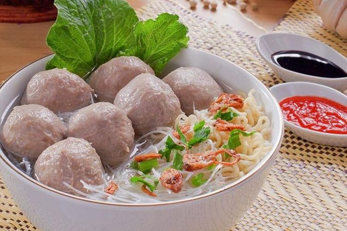

Restoran Tidak Sederhana
Makan enak, kenyang dan Mahal

Pemesanan
isi form pemesanan dengan klik tombol pesan dibawah
Mie Bakso Spesial
Mie bakso dapat ditemukan di seluruh Indonesia dari gerai jalanan sampai tempat makan kelas tinggi. Bersama dengan soto, sate dan siomay, mie bakso adalah salah satu makanan jalanan paling populer di Indonesia